Virtual box
OPCIONES DE RED EN LAS MAQUINAS VIRTUALES.
De las configuraciones posibles vamos a utilizar tres: Adatador puente, NAT y no conectado
Adatador puente
En este modo de configuración la máquina virtual pasa a ser un equipo más dentro de la red local doméstica o profesional con su correspondiente MAC, dirección IP privada etc. obtendrá un direccionamiento IP desde el servidor DHCP que tengamos en la red local, y no desde el servidor DHCP del VirtualBox. La máquina virtual tendrá comunicación con el resto de equipos de la red local y con Internet.
Es la configuración para la comunicación con el autómata, debemos de poner la opción modo promiscuo en aceptar todo.
configuración -> Red-> adaptador puente – modo promiscuo = aceptar todo.
NOTA: La ip de la maquina virtua debe de ser única en la red
NAT
Cuando estamos en una configuración de NAT, la máquina virtual saldrá a la red local doméstica y a Internet utilizando la dirección IP del equipo real, por lo tanto, es como si el equipo real estuviera intercambiando tráfico.
En este modo de configuración, la máquina virtual puede comunicarse con cualquier equipo de la red local doméstica o profesional a la que el PC real tenga alcance. Si un equipo de la red local quiere comunicarse con la máquina virtual que hay funcionando, no podrá hacerlo, Salvo que se active la opción de «Reenvío de puertos».
No conectado.
Esta opción equivale a desconectar el cable de red de un ordenador, por la tanto no tendrá ningún tipo de comuncicación por red
Saber más en el siguiente enlace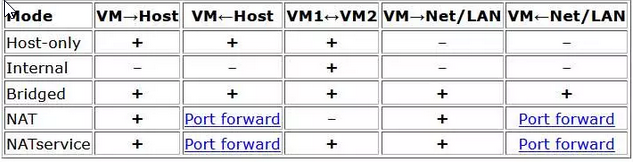
Cambiar la IP
Windows XP
windows 7
windows->panel de control->Redes e internet-> En centro de recursos compartidos seleccionar (ver estado y tareas de red)-> cambiar opciones del adaptador y a partir de realizar igual que en windows XP
Iniciar un proyecto
- -Arrancar en vista proyecto
- -Nuevo proyecto
- -Seleccionar un autómata
- -Selección de dispositivos ON LINE
- -Módulos de ampliación
- -IP del proyecto
Arrancar en vista proyecto
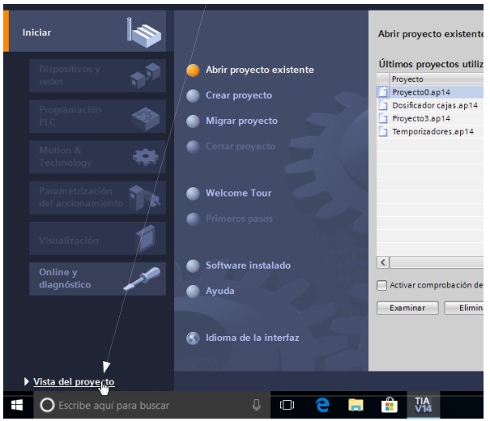 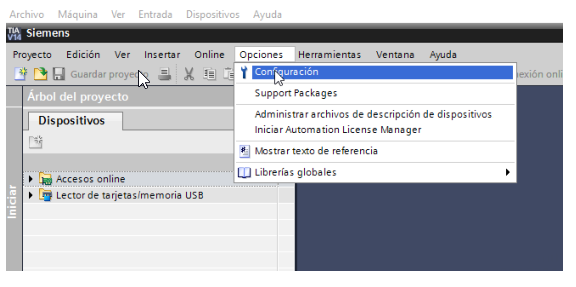 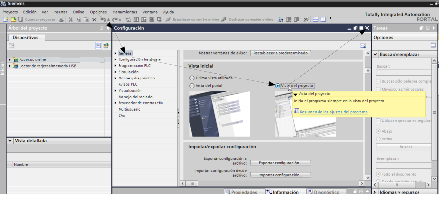Selección autómata
Nuevo proyecto
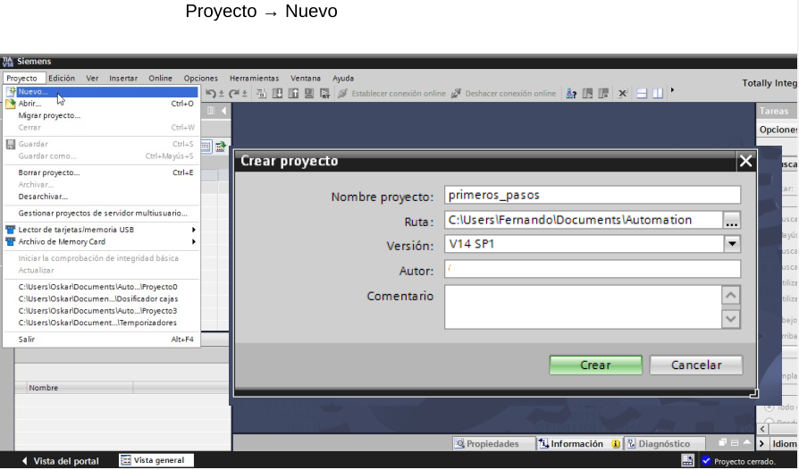Seleccionar un autómata
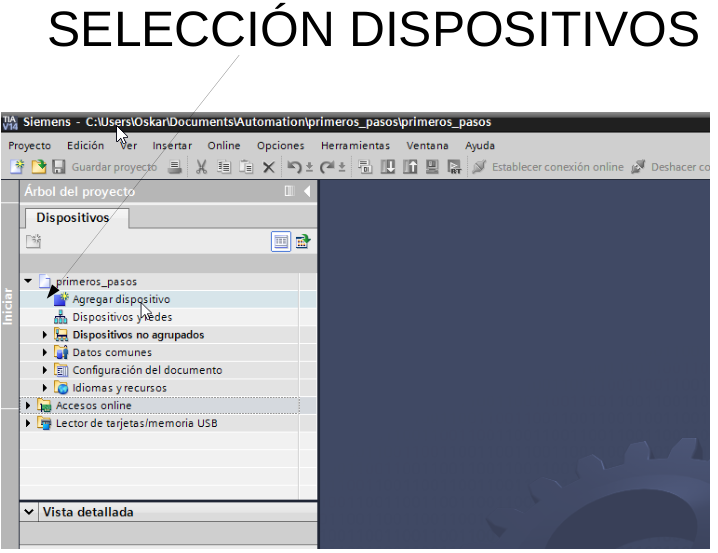 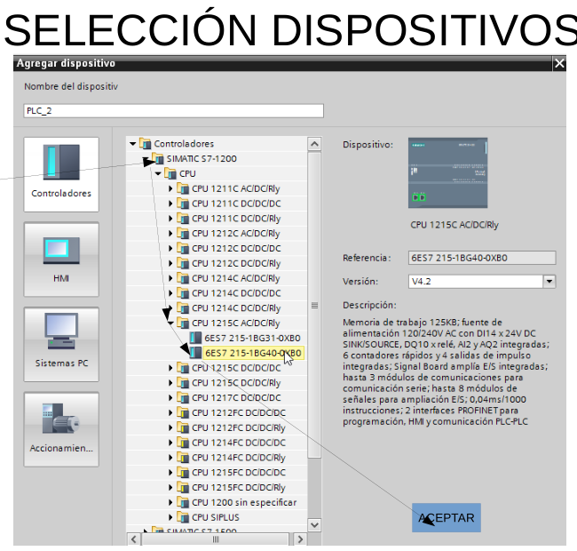 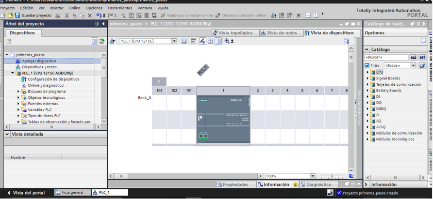Selección dispositivos Online
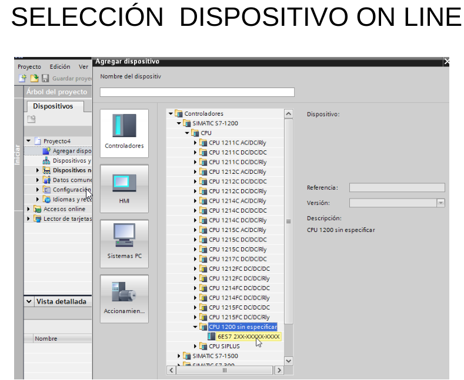 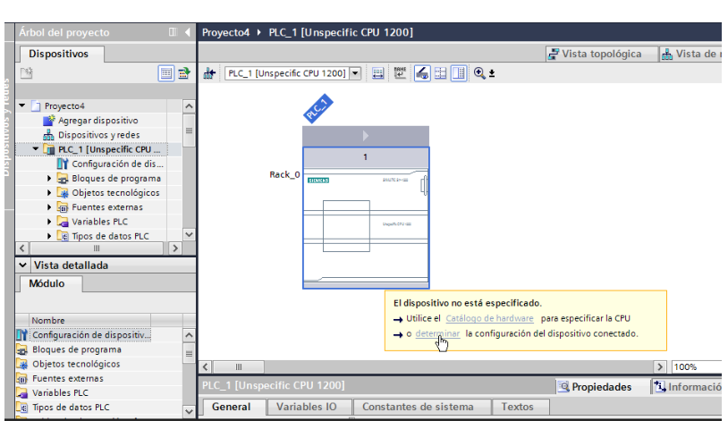
Módulos de amplilación
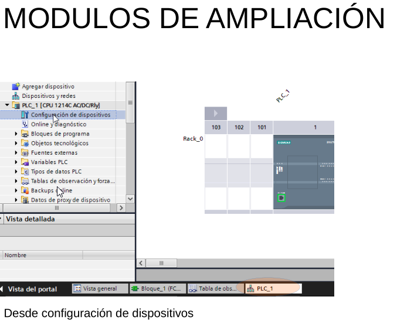 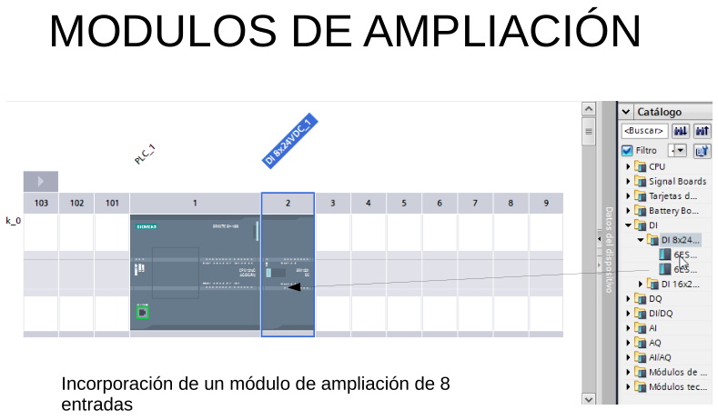 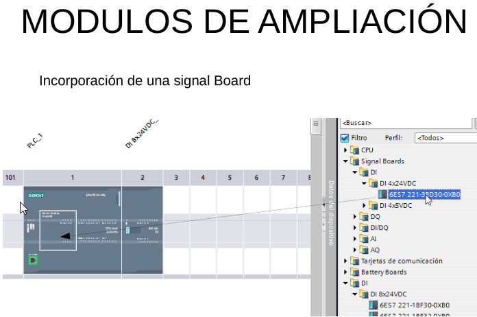IP del proyecto
 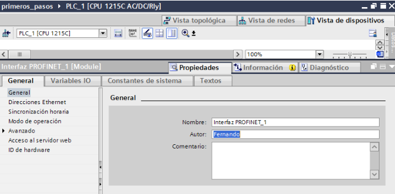
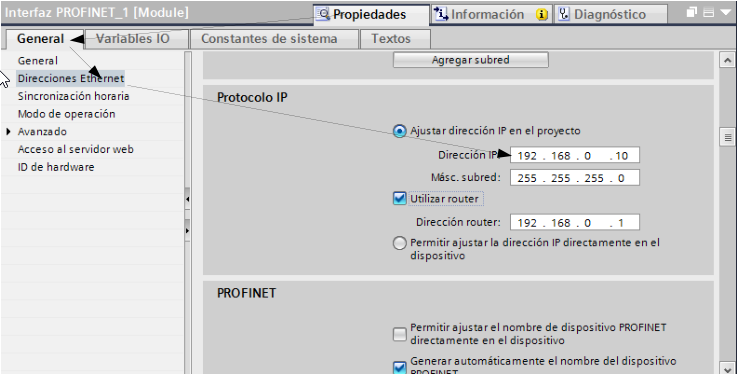
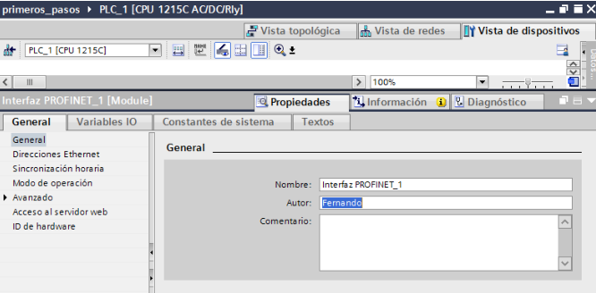
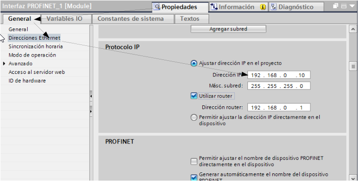
IP Autómata 1200
- -Cambiar IP del autómata
- -Localizar dispositivos
CAMBIAR IP DEL AUTÓMATA
Accesos online→ selecionamos nuestra tarjeta de red→ actualizamos→ y nos localiza los autómatas (pueden estar en con una IP que pertenezca a otra red, que TIA PORTAL los puede localizar.)→ online y diagnostico
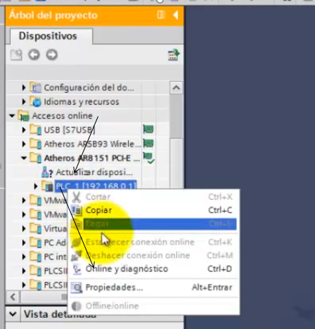Y puedo ver la MAC del autómata, la dirección IP y si la puedo cambiar la IP del autómata, primero debemos de borrar la ip asignada
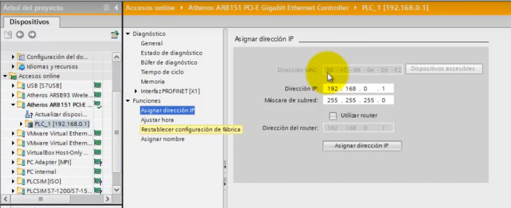 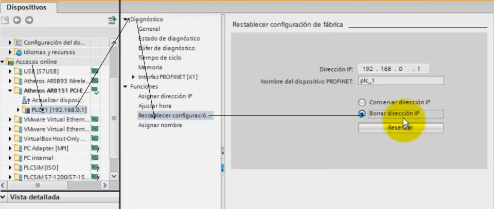CAMBIAR IP DEL AUTÓMATA
Volvemos a actualizar los dispostivos accesibles y aparece la MAC del dipositivo que no tiene la IP
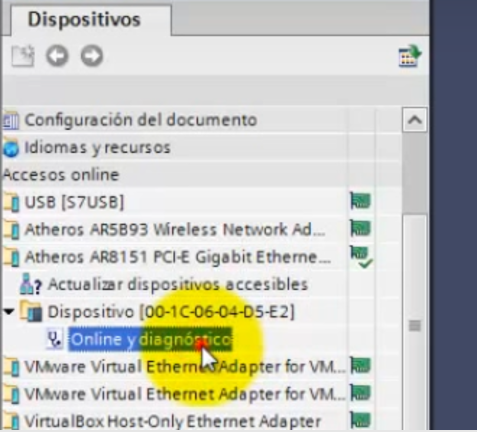 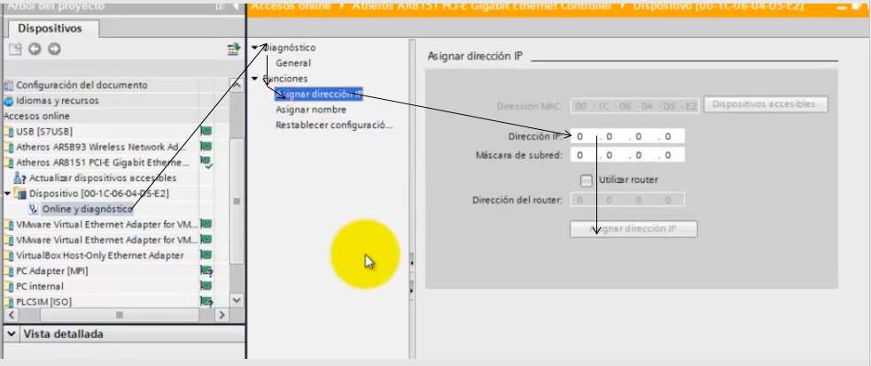CAMBIAR NOMBRE DISPOSITIVO Y PARPADEO DESDE ACCESO ONLINE
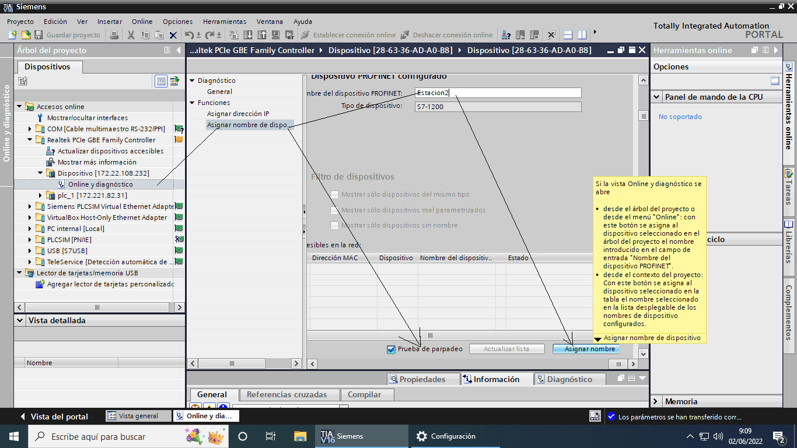LOCALIZAR DISPOSITIVOS
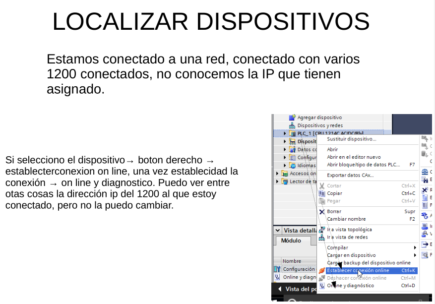 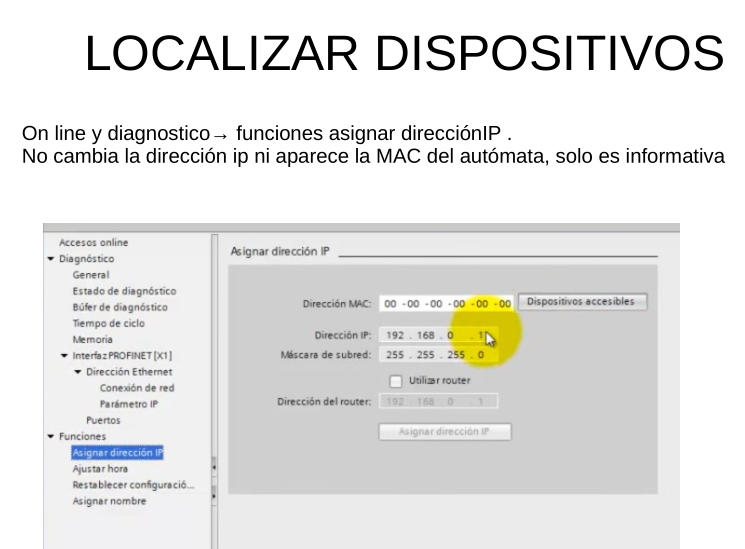
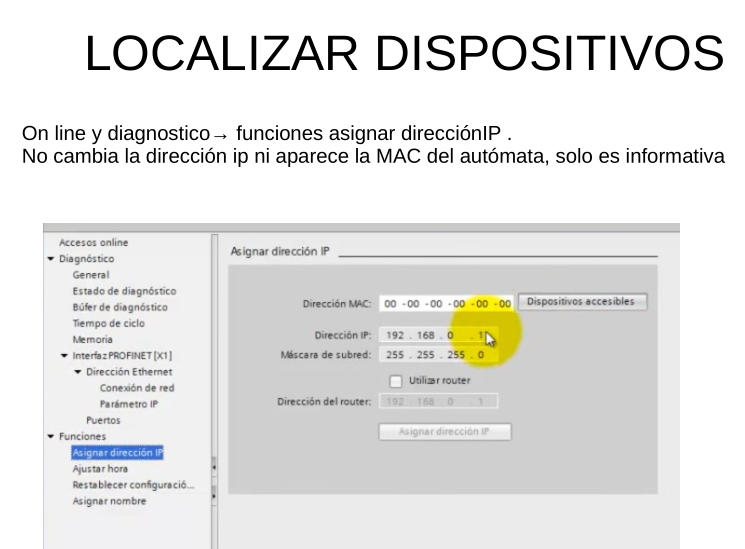
Guardar un programa
Al crear el proyecto le tenemos que dar el nombre del proyecto y la ruta donde le vamos a guardar, se creara una CARPETA con el nombre del proyecto y todos los archivos donde se almacenará todo la información del proyecto.
Una vez creado el programa, cuando quiera guardar modificaciones, click en proyecto y GUARDAR.
Si quiero cambiar el nombre del proyecto, click GUARDAR COMO, y se creara una carpeta nueva que incluye a todos los archivos necesarios con la información del proyecto.
Si quiero llevarlo a otro ordenador puedo hacerlo de distantas formas
- Llevar toda la carpeta.
- Llevar la carpeta comprimida con un compresor genérico.
- La MEJOR OPCIÓN Llevar la carpeta comprimida con la opción de archivar, creando un archivo comprimido, con extensión ZAP (versión del TIA PORTAL con el que se ha creado), ejemplo prueba.ZAP 16
Abrir el archivo en otro ordenador
- Si he llevado la carpeta comprimida con un compresor genénico, desmpimir el archivo en la carpeta donde guardamos los proyectos. Y desde proyecto -> abrir -> examinar-> busco la carpeta y click sobre el archivo con el logo del TIA PORTAL
- Si he llevado la carpeta sin comprimir, copiar la carpeta de nuestro proyecto en la carpeta donde guardamos los proyectos. Y desde proyecto -> abrir -> examinar-> busco la carpeta y click sobre el archivo con el logo del TIA PORTAL
- Si tengo el archivo comprimido con TIA PORTAL, Desde el programa Proyecto -> abrir-> click en examinar, y busco mi archivo-> lo selecciono y clik en abrir -> busco la carpeta done quiero guarda el proyecto SELECCIONAR CARPETA, y se descomprime mi proyecto en esa carpeta.
PLC Sim
Eliminar la contraseña y

Minimizamos el simulador y establecemos comunicación TIA portal con PLCSIM
Si cerramos la comunicación y queremos volver a establecerla, click en cargar en dispositivo y seleccionar PLCSIM
Seleccionar arrancar módulo